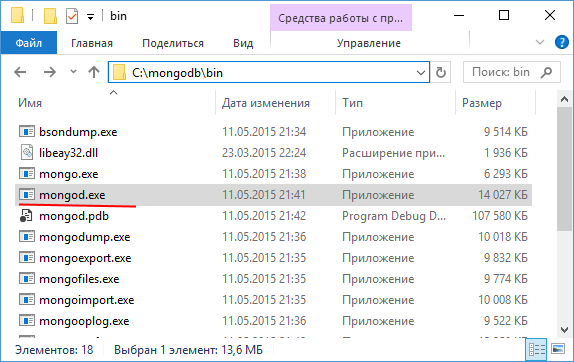
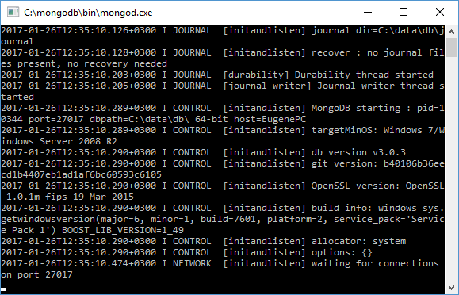
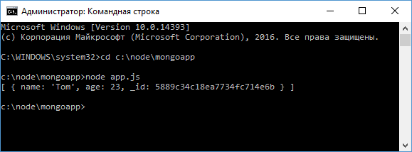

Начало работы с MongoDB
Наиболее популярной системой управления базами данных для Node.js на данный момент является MongoDB.
Для работы с этой платформой прежде всего необходимо установить сам сервер MongoDB.
Подробнее как это сделать, описывается здесь.
Кроме самого сервера Mongo для взаимодействия с Node.js нам необходим драйвер.
Итак, создадим новый проект.
Для этого определим новый каталог, который будет называться mongoapp.
Далее определим в этом каталоге новый файл package.json:
{
"name": "mongoapp",
"version": "1.0.0",
"dependencies": {
"express": "^4.14.0",
"body-parser": "^1.16.0",
"mongodb": "^2.2.22"
}
}
В данном случае последняя зависимость - "mongodb" как раз и представляет драйвер.
Всю необходимую справочную информацию конкретно по данному драйверу можно найти на
https://mongodb.github.io/node-mongodb-native/
Далее перейдем к этому каталогу в командной строке/терминале и для добавления всех нужных пакетов выполним команду:
npm install
Подключение к базе данных
Ключевым классом для работы с MongoDB является класс MongoClient, и через него будет идти все взаимодействия с хранилищем данных.
Соответственно вначале мы должны получить MongoClient:
var MongoClient = require("mongodb").MongoClient;
Для подключения к серверу mongodb применяется метод connect():
var mongoClient = require("mongodb").MongoClient;
mongoClient.connect("mongodb://localhost:27017/test", function(err, db){
if(err){
return console.log(err);
}
// взаимодействие с базой данных
db.close();
});
Метод connect принимает два параметра:
-
Адрес сервера с указанием базы данных. В качестве протокола адреса устанавливается "mongodb://". На локальной машине адресом будет localhost, после которого указывается номер порта. По умолчанию номер порта 27017.
После номера порта указывается название базы данных. Здесь в качестве бд указана база данных test, которая имеется на сервере mongodb по умолчанию. -
Второй параметр представляет функцию обратного вызова, которая срабатывает при установке подключения. Это функция принимает два параметра: err (возникшая ошибка при установке соединения) и db (ссылка на объект базы данных).
Если при подключении возникли ошибки, то мы можем использовать значение err для получения ошибки.
Если же ошибки нет, то мы можем взаимодействовать с базой данных через объект db.
В конце завершения работы с бд нам надо закрыть соединение с помощью метода db.close().
Коллекции и документы
В отличие от обычных реляционных баз данных в MongoDB нет таблиц.
Вместо таблиц все данные попадают в коллекции.
И в рамках node.js для взаимодействия с базой данных (добавления, удаления, чтения данных) нам потребуется получить объект коллекции.
Для этого применяется метод db.collection("название_коллекции"), в который передается название коллекции.
В отличие от таблиц в реляционных системах, где все данные хранятся в виде строк, в коллекциях в MongoDB данные хранятся в виде документов.
Например, добавим в базу данных один документ.
Для этого определим в каталоге проекта следующий файл app.js:
var mongoClient = require("mongodb").MongoClient;
var url = "mongodb://localhost:27017/usersdb";
mongoClient.connect(url, function(err, db){
var collection = db.collection("users");
var user = {name: "Tom", age: 23};
collection.insertOne(user, function(err, result){
if(err){
return console.log(err);
}
console.log(result.ops);
db.close();
});
});
В качестве базы данных здесь используется "usersdb".
При этом не важно, что по умолчанию на сервере MongoDB нет подобной базы данных.
При первом к ней обращении сервер автоматически ее создаст.
После подключения мы обращаемся к коллекции "users":
var collection = db.collection("users");
Опять же неважно, что такой коллекции по умолчанию нет в бд usersdb, она также будет создана при первом обращении.
Получив коллекцию, мы можем использовать ее методы.
В данном случае для добавления одного документа - объекта user применяется метод insertOne().
Этот метод имеет два параметра - сам добавляемый объект и функцию обратного вызова, которая выполняется после добавления.
В этой функции применяются два параметра: err (ошибка, которая может возникнуть при операции) и result (результат операции - добавленный объект).
В функции обратного вызова инспектируется добавленный объект с помощью свойства result.ops.
Причем это уже не просто объект user, а объект, который получен обратно из базы данных и который содержит идентификатор, установленный при добавлении.
Теперь перейдем на жестком диске к каталогу, в который установлена mongodb, а в этом каталоге перейдем к папке bin:
Запустим сервер mongodb, который находится в этом каталоге и который представляет собой консольную программу mongod.
Затем запустим наш файл app.js:
Как мы видим, кроме начальных свойств здесь документ еще имеет дополнительное свойство _id - это уникальный идентификатор документа, который присваивается сервером при добавлении.